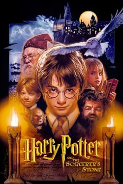
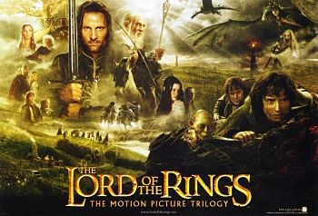
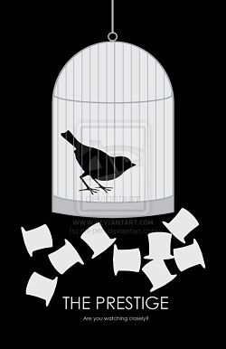
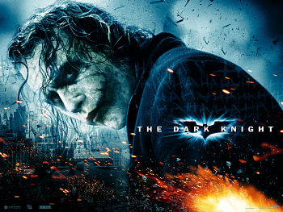

I would like to share with you 5 of my favorite movies and movie franchises. Underneath each image will be my explanation of why I like that movie, and the movie title and Graphic will be linked to the IMDb synopsis. In the case of movie franchises, I will choose my favorite movie out of the franchise to represent.

Harry Potter and the Sorcerer's Stone |

The Fellowship of the Ring |

The Prestige |
|||
| The Harry Potter books and movies were my childhood. I read the books with my family growing up and we all watched the movies together. I love the movies and I love the books. Something about the story really harmonizes with me and the characters are all so relatable. Harry Potter and the Sorcerer's Stone is the movie that I remember most fondly and most closely fit what I imagined Hogwarts to be like. | The Lord of the Rings movies were excellent interpretations of one of the bastions of the fantasy Genre. I had read the books in elementary school, but these movies are what really brought them to life for me. The reason I chose the fellowship is because of the two characters unique to it: Sauron in full battle armor, and the Balrog. Who doesn't look at those and just think "COOL!"? | The Prestige is one of those movies that you have to watch at least twice to really get a handle on the story. Hugh Jackman and Christian Bale act brilliantly keeping you hooked from the first scene. Then There was the twist! I love movies that make you think and keep you guessing. | |||

The Dark Knight |
Castle in the Sky |
||||
| The Dark Knight was an emotional roller-coster for me. There were adrenaline highs and emotional punches in the gut. But Heath Ledger's take on the Joker is and forever will be legendary. He portrays the Joker as a criminal and social genius that always keeps you guessing. Every twist and turn makes you think about how society thinks and reacts, and begs the question, "What would I do?". | Hayao Miyazaki is a master storyteller, and while I believe that Spirited Away is his real masterpiece, Castle in the Sky is the one I love the most. The fantastical setting and the lovable characters really do it for me. The story is predictable without being boring, but Miyazaki has a way of just bringing the screen to life, and his art style is gorgeous. | ||||